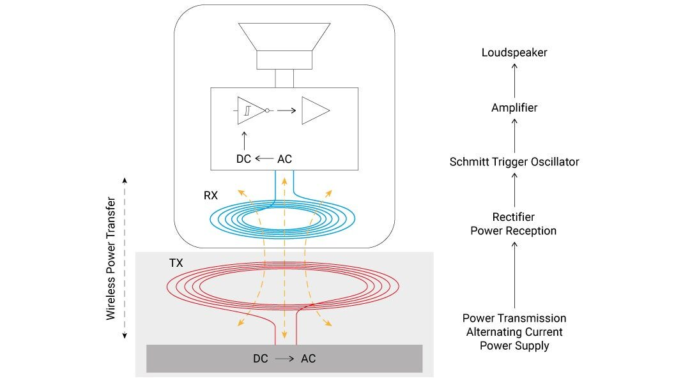
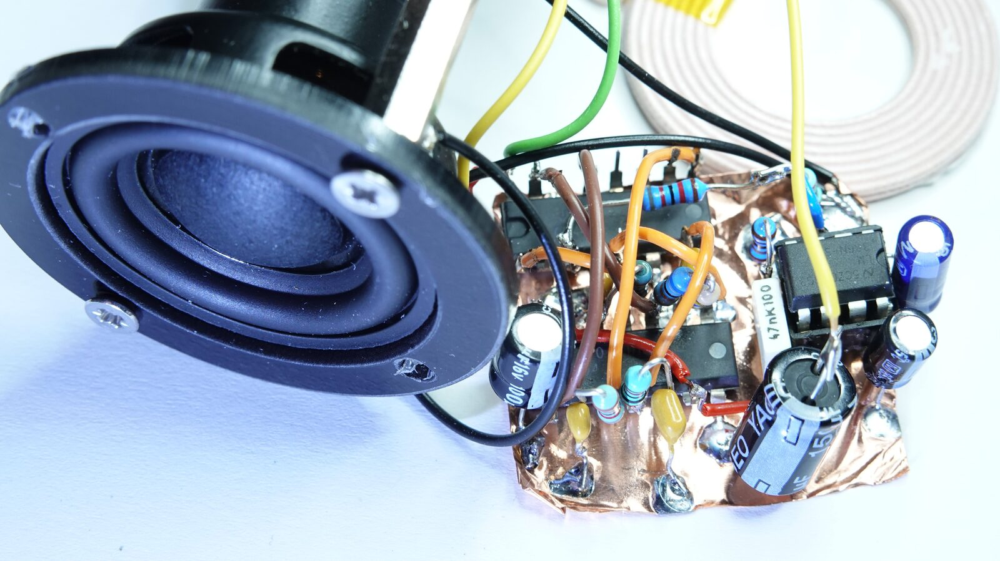
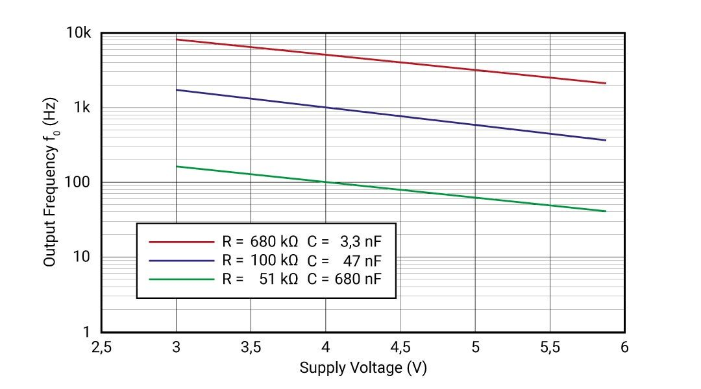
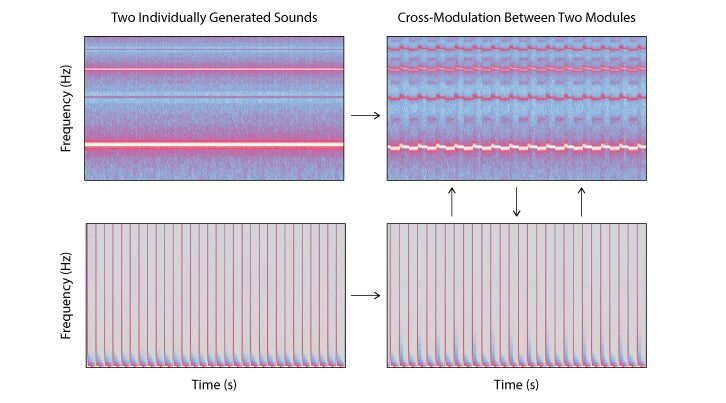

Wireless Sound Modules
Abstract
We study the question of how wireless, self-contained CMOS-synthesizers with built-in speakers can be used to achieve low-threshold operability of multichannel sound fields. We deliberately use low-tech and DIY approaches to build simple sound modules for music interaction and education in order to ensure accessibility of the technology. The modules are operated by wireless power transfer (WPT). A multichannel sound field can be easily generated and modulated by placing several sound objects in proximity to the induction coils. Alterations in sound are caused by repositioning, moving or grouping the sound modules. Although not physically linked to each other, the objects start interacting electro-acoustically when they share the same magnetic field. Because they are equipped with electronic sound generators and transducers, the sound modules can work independently from a sound studio situation.
Author Keywords
sound art installation, haptic interface, CMOS sound, wireless power transfer
CCS Concepts
•Applied computing → Arts and humanities; Media arts;
•Hardware → Communication hardware, interfaces and storage → Tactile and hand-based interfaces → Haptic devices;
Introduction
The work presented here evolved from an art project that examined extended features and new design aspects of tables. During the development phase, transmission coils for wireless power transfer (WPT) were integrated into the tabletop. Playful experiments were conducted to investigate the impact of the electromagnetic field on inductive receiver devices by simply placing them on a surface above the transmitting coils. A simple voltage- and current-coupled modulation method was observed. Variations in the induced voltage of the receiver coils were used to influence the behavior of CMOS1 audio circuits. In the further course of the project, we integrated this effect into a series of objects, wireless sound modules, which are presented as an interactive sound art installation.
Playability of New Instruments
Operating a musical instrument on an advanced level requires previously acquired skills and an understanding about a) how to produce sound (fine motor skills) and b) how to structure the sound in a musical way[1]. Digital musical instruments, embedded systems or controller interfaces represent freely configurable systems which provide their digital functions in rarely self-explanatory ways. A range of projects and approaches addresses this issue such as the Reactable or Block Jam[2]. In a similar way, parameters of analog synthesizers are mostly not self-explanatory; due to the combinatorial complexity of modular systems, it is also not obvious how underlying synthesis technique and control voltages integrate into a module’s circuit.
Exploring the functions by merely tweaking knobs, listening to the resulting sound and trying to understand the relation between controller elements and synthesis is intuitive on a beginner’s level, but becomes tedious when an advanced level is aimed for. Furthermore, many electronic instruments require a technical environment that provides signal mixing, amplification, audio playback or MIDI controllers, etc., to be operated. These are some of the reasons why such new instruments obtain only little acceptance and have in many cases no further circulation[3].
The work presented here avoids some of these problems by keeping everything low-tech and self-contained. Sonic expression can be anticipated playfully by allowing the musician to interact with the objects. Since the interaction is directly related to the spatial position within a magnetic field, the sound responds dynamically to positional changes. This process can be understood intuitively by the performer.
Hardware
Wireless Power Transfer (WPT)
The core concept of our approach was to build wireless sound modules. Non-sophisticated music electronics are used to generate audio signals, while transducers are integrated into the module’s casing. The modules are powered by induction coils (see Figure 1). WPT is based on the following principle: a power supply driving a circuit that generates an alternating current which, in turn, is transmitted to a flat spiral coil. Voltage is induced into the receiver coil by electromagnetic induction; the voltage is then rectified to enable it to drive another circuit[4]. This method is implemented in standards like Qi. Due to its limited range, the induction method is mainly used for charging the rechargeable batteries of hand-held devices. This magnetic field exists only close to the transmitter coil and is thus called a “near field”. According to the inverse-square law, the both coils should have a parallel orientation to one another and should be placed in close proximity to achieve best inductive coupling for high efficiency.


Figure 1: Simplified representation of a wireless powered sound module.
Audio Circuits
Sound synthesis is carried out by CMOS ICs (see Figure 2). Their actual fields of applications are binary logic operations. The artistic and musical use of these well understood circuits is comprehensively described by Nicolas Collins in his book “Handmade electronic music”[5]. Within the community, these circuits are called “Lunettas”2 and many examples can be found on the internet in various forums3. Logic circuits can be set up in a building block approach to generate and process sound[6]. Their construction only requires a basic understanding of electronics. Since logic ICs don't need much external wiring, space-saving methods like the dead bug construction, where direct connections between the circuit points are made without a PCB, can be used[7].


Figure 2: CMOS audio circuit and loudspeaker.
Loudspeakers and Enclosures
Various techniques were examined for sound production (see Figure 2). The concept of electromagnetic induction as a conventional operating principle for electro-acoustic transducers was implemented here[8]. The ubiquitous power operational amplifier LM386 and compact off-the-shelf full-range speakers were used. Each object functions as a sealed chamber for a single dynamic loudspeaker. We used 3D printing as an effective method to create various shapes, tailored to the needs of our application (e.g., form factor, PCB sizes, mounting holes for loudspeakers; see Figure 3).

Figure 3: 3D-printed objects.
Modulation Technique and Interaction Possibilities
Since our objects are not equipped with conventional control elements like rotary knobs, sliders, touch-sensitive surfaces or the likes, the performer of the instrument feels unaccustomed to its operation. When the objects are placed into the magnetic field of the current-carrying induction coils, integrated into a table, the circuits are put into operation and produce sound that is played back via the built-in loudspeakers.
Since the efficiency of the WPT is a function of the distance between the transmitting and the receiving coil, moving the objects causes variations in the supplied power, which affects the overall performance of the circuit’s behavior and therefore modulates the sound synthesis process. For example, in Schmitt trigger oscillators, the supply voltage determines the hysteresis thresholds4 and and thus the frequency, which the following equation5 shows[9]:
VP)(VDD−VPVDD−VN)]
The direct relation between the physical parameters of the induction field and the sound provides the user with audible feedback. There are certain similarities to the theremin, an early electronic musical instrument, although the theremin is played without touch, i.e., without haptic modality. Nevertheless, when playing the theremin, fine motor skills are necessary to move one’s hand in a controlled manner within an electric field to change pitch and volume. This “sensing” concept of the theremin is based on capacitive coupling between two electrodes, the hand and an “antenna”[10].


Figure 4: Relation between the supply voltage and the frequency of the oscillator.
To play with the sound on the instrument presented here, the objects can be tilted or even held above the magnetic field, which works at up to a distance of approximately 2.5". For example, the frequency of the oscillators increases with distance while the amplitude falls (see Figure 4). If several objects are placed into the same magnetic field, the chips start “battling” for the available power. In CMOS technology, power consumption increases at higher switching rates[11].


Figure 5: Spectral analaysis of individually generated and cross-modulated sounds.
If the current capacities are limited, interesting cross modulations and vivid interactions among the modules can be observed (see Figure 5). Within the DIY music community, this phenomenon is colloquially termed “voltage starve” and affects pitch, texture and sound6. The circuits are configured so that, with a stable power supply, they produce slow clicking sounds, drones, textures, pulse-modulated square waves etc. From a compositional point of view, the circuits inside of each object can be seen as predefined tracks or individual “voices” that can be faded in or out and modulated as described.
Link to audio-visual documentation:
https://vimeo.com/535452290

Figure 6: Interactive sound art installation based on inductive power.
Conclusions
Our work can be easily replicated and reproduced. It offers an intuitive way to generate and modulate multichannel sound with a tactile music interface. The low-tech, DIY approach is most likely to ensure accessibility to the technology. The fact that the entire building process was accurately documented will encourage DIY approaches. Another advantage is that electronic waste can be reduced because the number of electronic components is reduced to a minimum and the circuits can be assembled without PCBs.
Further Research Questions
The various effects of limited voltage and current on the circuit’s performance need to be examined in more detail, including the effects of electromagnetic interference due to inductive coupling of the speakers and induction coils. Another point of investigation is how to extend the operating range of the WPT. Further development steps will be to evaluate the artistic qualities of the multichannel sound fields and the tactile interaction components as a relationship between the object's shape and sound.
Acknowledgments
We are deeply thankful to Holger Förterer and Dr. Paul Modler at Karlsruhe University of Arts and Design for their constant encouragement and support.
Footnotes
Complementary metal-oxide semiconductor, a technology used to fabricate the logic family of integrated circuits (ICs) with the same name.
↩Named after Stanley Lunetta, California-based artist and educator, whose sound sculptures are based on logic circuits: http://moosack.net/stang/sculpts.html
↩- ↩
V_{ H } is the difference between the positive-going travelling voltage V_{ P } and the negative-going travelling voltages V_{ N }.
↩Where t is one complete cycle, R the resistance, C the capacitance and ln the natural logarithm.
↩“Voltage sag”, simulating the under-voltage and limited current-delivery capacities of a dying battery in guitar pedalboards, is used for musical distortion: http://beavisaudio.com/techpages/poweringpedals/
↩
Citations
S. Papetti and C. Saitis. Musical Haptics: Introduction in Musical Haptics. Springer, 2018.
↩S. Jordà, G. Geiger, M. Alonso, & M. Kaltenbrunner. The ReacTable: Exploring the Synergy between Live Music Performance and Tabletop Tangible Interfaces. In Proceedings of the 1st International Conference on Tangible and Embedded Interaction (pp. 139–146). ACM, 2007.
↩S. Jordà. Digital Instruments and Players: Part I – Efficiency and Apprenticeship. In Proceedings of New Interfaces for Musical Expression (NIME), Hamamatsu, Japan, 2005.
↩JI. Agbinya. Wireless Power Transfer, River Publishers Denmark, 2012.
↩N. Collins. Handmade Electronic Music: The Art of Hardware Hacking, 2009.
↩R. Wilson. Make: Analog Synthesizers, Maker Media, Sebastopol, 2013.
↩High Speed Amplifier Techniques: A Designer’s Companion for Wideband Circuitry, AN47, Analog Devices, p. 27, 1991.
↩T. Görne. Tontechnik: Hören, Schallwandler, Impulsantwort und Faltung, digitale Signale, Mehrkanaltechnik, tontechnische Praxis, Hanser, München, 2014.
↩CD40106B CMOS Hex Schmitt-Trigger Inverters, SCHS097F, Texas Instruments, 2017.
↩M. Sauer. Die Thereminvox: Konstruktion, Geschichte, Werke, epOs Music, Osnabrück, 2008.
↩C-T. Sah. Fundamentals of Solid-state Electronics. World Scientific Publishing, Singapore, 1993.
↩